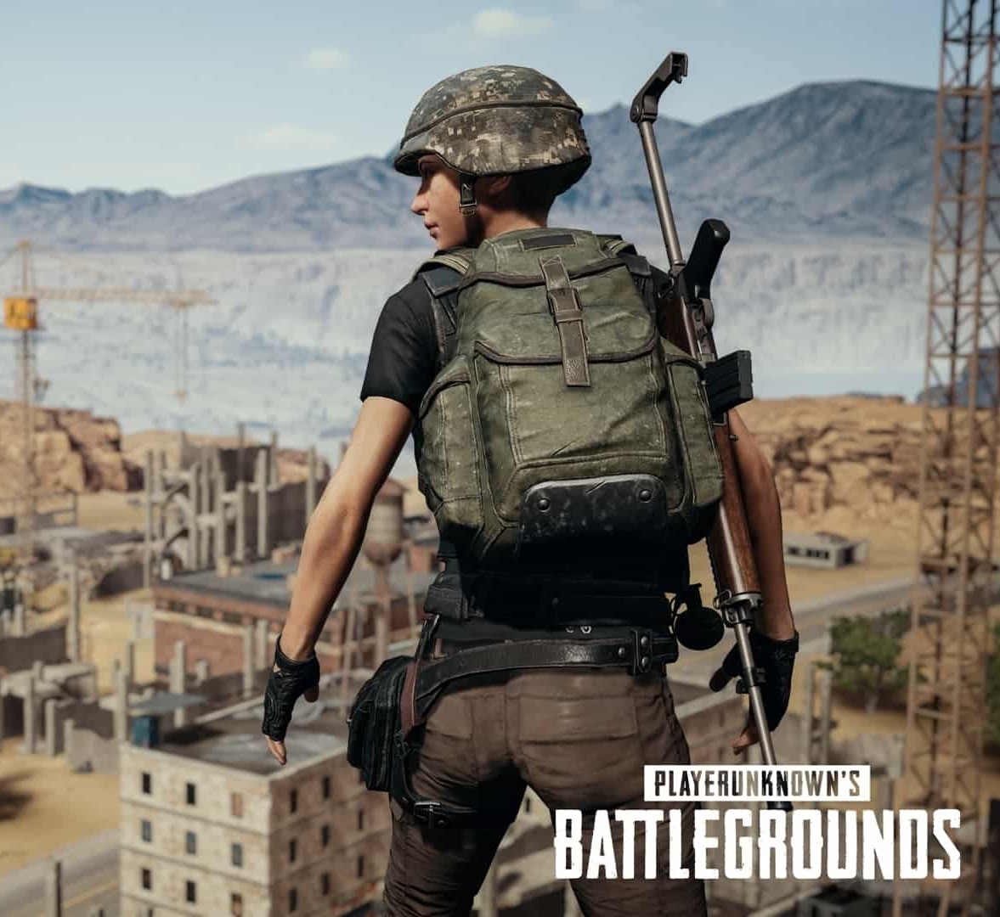

PLAYER'S UNKNOWN BATTLE GROUND
Playerunknown’s Battlegrounds, colloquially known as PUBG(pronounced pub-gee), is if nothing else conceptually efficient. 100 players parachute onto an island. The last one alive wins. An unoriginal idea executed in an original fashion: That’s the merit of Battlegrounds.
Battlegrounds is the culmination of years of genre experimentation by designer Brendan “Playerunknown” Greene. Where contemporaries polish the graphical and technical edges of an established formula through iteration after iteration, Greene has been honing the very formula itself. The game is aesthetically bland and prone to technical hiccups, but compared to its battle royale-inspired predecessors — a few Arma mods and H1Z1 — Battlegroundsis refreshingly accessible.
Newcomers who don’t religiously monitor video game trends can grok the beginning, middle and end of their first match. Players float onto an island, raid vaguely Eastern European towns or dusty ramshackle forts for randomized gear, and stay within the confines of an electric blue circle that slowly shrinks the map from miles of open terrain to a single square foot, forcing all survivors into the limited safe space.
Along the way to the center of the circle, the player eliminates the competition — or allows it to fight amongst itself. Whether the player is sniping from a distant cliff, going house to house with a shotgun or simply hiding in the brush, the number of survivors will inevitably tick down as the blue circle pushes them into a spot like a giant trash compactor of conflict.
A few hours into Battlegrounds, you get the sneaking sensation that everything, even the smallest detail, has a purpose. For example, every door is closed when a match begins, so doors exist as doors, but when spotted open, also serve as warnings that you aren’t the first person to arrive at a home. Military bases and cities house powerful weapons, but that attracts more players, and thus more conflict. For a time, high-level players began to memorize the direction in which cars would be parked by default, so they could tell an untouched vehicle from a honeypot. The more you play, the more you learn how to speak Battlegrounds.
Unlike most popular literature and films, most video games teach you how to read them, which is to say they’re as much about the content as how you experience that content. Many games rely on the familiar language of games — red barrels explode, blinking red spots on an enemy mark its vulnerability — only introducing a few new phrases of play along the way. But games that upend established genres or inspire entirely new ones teach new languages, which in turn get polished, contorted and improved upon by future games.
Battlegrounds is the refinement of a new language of play, but what may earn it a spot in the video game canon is that conceptual efficiency. It isn’t accessible for every player, but it’s understandable. Anybody can easily learn to read this game, to watch it, to spot the tension and excitement and drama. Critics and fans have speculated on how PUBG will operate as an esport, whether or not its pacing works for competitive play. But that ignores the obvious fact: Battlegrounds works as entertainment. Sport or not, it has found its audience of players and viewers alike.
We’ve already seen Battlegrounds’ first “cousin” in the form of Fortnite: Battle Royale, which beat the game to market on console. Expect to see more in the coming years, as every AAA publisher finds ways to put its brands, talent and money into exploiting the language of the battle royale genre. I have no doubt a few of these games will be great. One or two may be superior to Battlegrounds. But they will never capture the magic of first becoming fluent in this imperfectly perfect game.